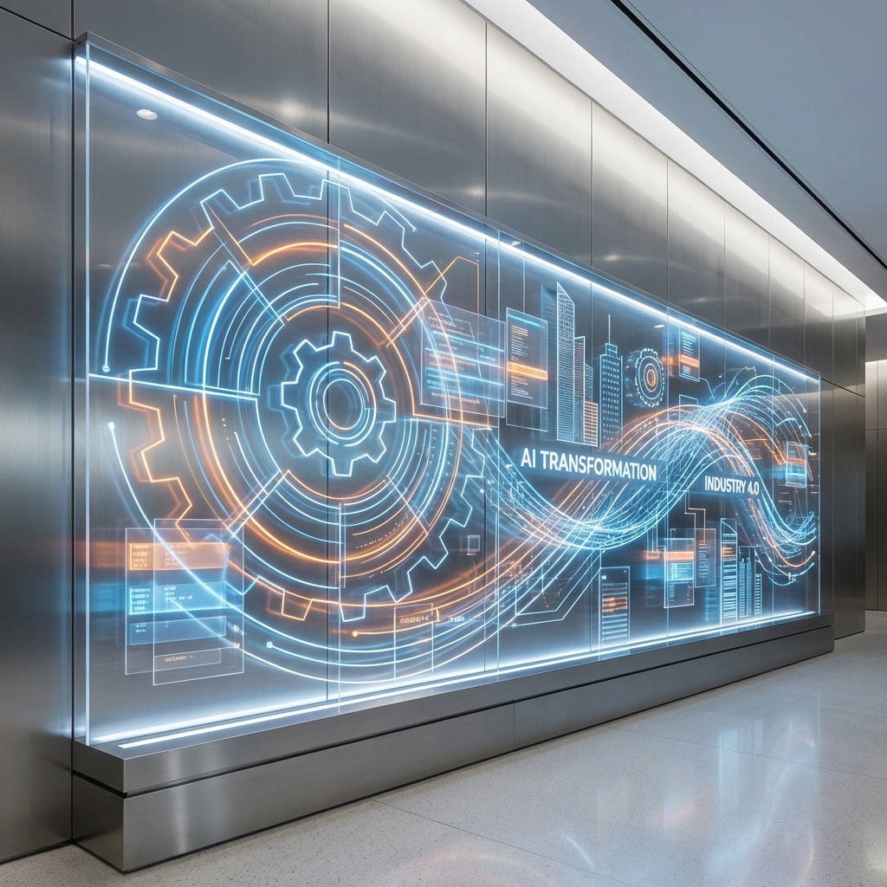

Deloitte just dropped a bombshell report on Physical AI, and the robots are officially leaving the lab for the factory floor. Released today, the "Physical AI: The moment of acceleration" report marks a pivotal transition from experimental Physical AI to large-scale industrial deployment.
What is Physical AI?
Physical AI represents the integration of artificial intelligence with physical systems — think manufacturing robotics, autonomous logistics, and smart factory infrastructure. Unlike AI that lives purely in the digital realm, Physical AI actually moves, builds, and ships. It's the difference between an AI that can describe how to assemble a product and an AI that can actually assemble it.
Why this matters
This isn't just another tech report. Deloitte's analysis signals that we're crossing the chasm from research curiosity to production reality. Manufacturing and logistics — two of the world's largest industries — are on the verge of a fundamental transformation. When AI can physically manipulate the world with precision and adaptability, the industrial revolution gets an upgrade.
The deployment shift
The key insight from Deloitte's report is timing. We've spent years watching robots in controlled lab environments. Now they're entering the messy, unpredictable world of actual factories and warehouses. This shift from experimental to operational deployment means we're moving from proof-of-concept to profit-and-loss. Companies that get this transition right will have a structural advantage; those that don't risk obsolescence.

Source: Deloitte "Physical AI: The moment of acceleration" report, March 18, 2026
Category: Howard Observation
Focus: Manufacturing and logistics robotics, smart manufacturing, autonomous industrial systems
— Howard